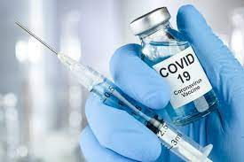
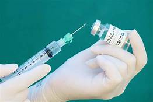

Quem não se vacina não coloca apenas a própria saúde em risco, mas também a de seus familiares e outras pessoas com quem tem contato, além de contribuir para aumentar a circulação de doenças. Tomar vacinas é a melhor maneira de se proteger de uma variedade de doenças graves e de suas complicações, que podem até levar à morte.
A maioria das doenças que podem ser prevenidas por vacina são transmitidas pelo contato com objetos contaminados ou quando o doente espirra, tosse ou fala, pois ele expele pequenas gotículas que contém os agentes infecciosos. Assim, se um indivíduo é infectado, pode transmitir a doença para outros que também não foram imunizados.
|  |  |
Graças à vacinação, houve uma queda drástica na incidência de doenças que costumavam matar milhares de pessoas todos os anos até a metade do século passado - como coqueluche, sarampo, poliomielite e rubéola. Mas, mesmo estando sob controle hoje em dia, elas podem rapidamente voltar a se tornar uma epidemia caso as pessoas parem de se vacinar.
As vacinas são a forma mais eficiente de prevenir doenças infecciosas. O pioneiro no desenvolvimento das vacinas foi Edward Jenner, um médico britânico que desenvolveu o imunizante contra a varíola, a qual foi declarada erradicada em 1979 pela Organização Mundial da Saúde (OMS) – devido à grande eficácia do método.
Apesar de não ser uma ferramenta nova de combate a doenças, em meio à corrida para a produção e disponibilização de vacinas contra a Covid-19, também surgem muitas dúvidas por parte da população.